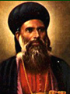
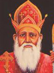
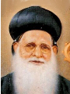
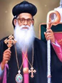

color schemes
Choose Custom color
Our Bishops
Our church is blessed and honored to be guided by some of the great bishops of Malankara Sabha, starting from His Holiness Geevarghese Mar Gregorious (Parumala Thirumeni) to His Grace Geevarghese Mar Osthathios. Given below is a list of all those great men who has blessed and guided us all these years
His Grace Geevarghese Mar Gregorious (Parumala Thirumeni) (1877 - 1902)
 His Grace Geevarghese Mar Gregorious has guided the church from 5th May 1877 to 2nd November 1902. His grace has been a regular visitor to the church and has great love for the people of Kallooppara. In due respect to his grace there ia a prayer room dedicated to him in the church
His Grace Joseph Mar Deevanasios, Pulikattil (1902 - 1909)
 His Grace Joseph Mar Deevanasios, Pulikattil (1902 - 1909) After the death of His Holiness Geevarghese Mar Gregorious, His Grace Joseph Mar Deevanasios, Pulikattil has taken charge as the diocese bishop and served the diocese very efficiently until his death in 1909.
His Grace Geevarghese Mar Deevanasios, Vattasseril (1909 - 1912)
Rev. Fr.Cherian George, Kochumalil served the church from 1st of June 2012 to May 2015.
His Grace Geevarghese Mar Gregorious (1912 - 1929)
 His grace served the diocese from 1912 to 1929 and in 1929 his grace was chosen as the Catholicose of the East and so his grace retired from the post of diocese bishop. From 1929 to 1933 His Grace Geevarghese Mar Deevanasios, Vattasseril again served as the diocese bishop.
His Grace Joseph Mar Savarious (1933 - 1937)
 His grace belongs to Valakuzhy in Vennikulam panchayath. His grace served the diocese from the year 1933 to 1937 and in the year 1937 his grace migrated to the Catholic Syrian Church. So from 1937 to 1944 His Grace Geevarghese Second has served as the bishop of the church.
His grace belongs to Valakuzhy in Vennikulam panchayath. His grace served the diocese from the year 1933 to 1937 and in the year 1937 his grace migrated to the Catholic Syrian Church. So from 1937 to 1944 His Grace Geevarghese Second has served as the bishop of the church.
His Grace Thoma Mar Deevanasios (1944 - 1972)
 His Grace Thoma Mar Deevanasios became the bishop of the church in 1944. His grace has been a great support and strength to the church and members during the Malankara sabha cases. His grace passed away on 3rd December 1972 and was buried in Mount Tabore Dayara, Pathanapuram. After his demise His Grace Augen First Bava served the church from 1972 to 1975 and His Grace Mathews Second Bava from 1975 to 1976.
His Grace Geevarghese Mar Osthathios (1976 - 2007)
His grace took charge of the Niranam diocese on 1st of April 1976 and served as the diocese bishop till 2007. Currently his grace is the senior diocese bishop of Niranam. His contributions to the society has been remarkable, his grace has started and guided many charitable organization to help the poor and needy irrespective of caste and religion. His grace has written many books of social and religious values and has always been a role model to all.
His Grace Yoohanon Mar Chrisostamos (2007 - till date)
His grace was born in 1954 as the son of Mr KV Yohannan and Mrs Aleyamma Yohannan, Mannil Puthen Purayil, Kottoor, Thiruvalla. He had his early education in local schools at Kottoor, and college education at SB College, Chenganachery. After completing BSc from the University of Kerala, he joined Orthodox Theological Seminary, Kottayam, and took his GST and BD from Serampore University. He did his MTH from United Theological College, Bangalore, and PhD from The San Francisco Theological Seminary. He was ordained as a Metropolitan on 5 March 2005 by HH Baselios Mathews II at Parumala Seminary. He took the charge of Niranam Diocese from His Grace Geevarghese Mar Osthathios in 2007.